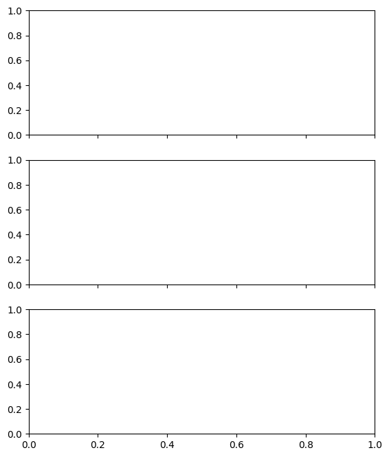

Drought Prediction with Time Series Modeling¶
Martin Vonk - 2022
This notebooks shows a quick calculation of the SPI, SPEI and SGI for De Bilt, in the Netherlands. The SGI is calculated using a Pastas time series model since the original time series is too short. The application of time series models for extrapolating groundwater time series is discussed in Brakkee et al (2022).
Required packages¶
[1]:
import matplotlib.pyplot as plt
import pandas as pd
import pastas as ps
import scipy.stats as scs
import spei as si # si for standardized index
print(si.show_versions())
python: 3.11.13
spei: 0.8.0
numpy: 2.2.6
scipy: 1.16.1
matplotlib: 3.10.3
pandas: 2.3.1
DeprecationWarning: As of Pastas 1.5, no noisemodel is added to the pastas Model class by default anymore. To solve your model using a noisemodel, you have to explicitly add a noisemodel to your model before solving. For more information, and how to adapt your code, please see this issue on GitHub: https://github.com/pastas/pastas/issues/735
Import time series¶
Time series are imported using the package hydropandas. Enddate is by default yesterday. The head time series is obtained from a Pastas test dataset.
[2]:
# import hydropandas as hpd
# today = datetime.date.today()
# yesterday = (today - datetime.timedelta(days=1)).strftime("%Y-%m-%d")
# prec = (
# hpd.PrecipitationObs.from_knmi(
# meteo_var="RH", stn=260, startdate="1959-07-01", enddate=yesterday
# )
# .multiply(1e3)
# .squeeze()
# )
# prec.index = prec.index.normalize()
# evap = (
# hpd.EvaporationObs.from_knmi(
# meteo_var="EV24", stn=260, startdate="1959-07-01", enddate=yesterday
# )
# .multiply(1e3)
# .squeeze()
# )
# evap.index = evap.index.normalize()
df = pd.read_csv("data/DEBILT.csv", index_col=0, parse_dates=True)
prec = df["Prec [m/d] 260_DEBILT"].multiply(1e3).rename("prec")
evap = df["Evap [m/d] 260_DEBILT"].multiply(1e3).rename("evap")
head = df["Head [m] B32C0572_DEBILT"].rename("B32C0572").dropna()
today = df.index[-1]
yesterday = df.index[-2]
Calculate SPI and SPEI¶
[3]:
# Accumulate time series on monthly basis
spi1 = si.spi(prec, timescale=30, dist=scs.gamma, fit_freq="MS")
spei1 = si.spei((prec - evap), timescale=30, dist=scs.fisk, fit_freq="MS")
[4]:
xlim = pd.to_datetime(["2018-01-01", df.index[-1]])
fig, axs = plt.subplots(2, 1, figsize=(7.0, 5.5), sharex=True)
si.plot.si(spi1, ybound=3.1, ax=axs[0], background=False, cmap="roma")
si.plot.si(spei1, ybound=3.1, ax=axs[1], background=False, cmap="roma")
[(x.grid(), x.set_xlim(xlim), x.set_ylabel("Z-Score")) for x in axs]
axs[0].set_title("Standardized Precipitation Index")
axs[1].set_title("Standardized Precipitation Evaporation Index")
fig.suptitle("Meteoroligical Drought-Indices De Bilt")
fig.tight_layout()
---------------------------------------------------------------------------
DeprecationWarning Traceback (most recent call last)
Cell In[4], line 4
1 xlim = pd.to_datetime(["2018-01-01", df.index[-1]])
3 fig, axs = plt.subplots(2, 1, figsize=(7.0, 5.5), sharex=True)
----> 4 si.plot.si(spi1, ybound=3.1, ax=axs[0], background=False, cmap="roma")
5 si.plot.si(spei1, ybound=3.1, ax=axs[1], background=False, cmap="roma")
6 [(x.grid(), x.set_xlim(xlim), x.set_ylabel("Z-Score")) for x in axs]
File ~/work/SPEI/SPEI/.tox/docu/lib/python3.11/site-packages/spei/plot.py:67, in si(si, add_category, figsize, cmap, background, ax, **kwargs)
64 colormap = cmap
66 if "ybound" in kwargs:
---> 67 raise DeprecationWarning(
68 "The 'ybound' argument is deprecated and will be ignored. To set y-axis "
69 "limits, use the 'set_ylim()' method on the returned Axes instance."
70 )
72 ymin, ymax = -3.0, 3.0 # default y-axis limits, also used for colormap norm
74 if background:
DeprecationWarning: The 'ybound' argument is deprecated and will be ignored. To set y-axis limits, use the 'set_ylim()' method on the returned Axes instance.
Create time series model and simulate head¶
[5]:
ml = ps.Model(head)
rm = ps.RechargeModel(
prec, evap, ps.Exponential(), recharge=ps.rch.FlexModel(gw_uptake=True)
)
ml.add_stressmodel(rm)
ml.solve(tmin="1970-07-01", report=True)
_ = ml.plots.results(figsize=(10.0, 8.0))
Fit report B32C0572 Fit Statistics
================================================
nfev 67 EVP 79.71
nobs 1187 R2 0.80
noise False RMSE 0.11
tmin 1970-07-01 00:00:00 AICc -5311.02
tmax 2020-12-28 00:00:00 BIC -5270.51
freq D Obj 6.67
warmup 3650 days 00:00:00 ___
solver LeastSquares Interp. No
Parameters (8 optimized)
================================================
optimal initial vary
recharge_A 0.474069 0.443936 True
recharge_a 171.662485 10.000000 True
recharge_srmax 70.059716 250.000000 True
recharge_lp 0.250000 0.250000 False
recharge_ks 68.512519 100.000000 True
recharge_gamma 1.263178 2.000000 True
recharge_kv 2.000000 1.000000 True
recharge_simax 2.000000 2.000000 False
recharge_gf 0.246865 1.000000 True
constant_d 0.940004 1.377665 True
Warnings! (1)
================================================
Parameter 'recharge_kv' on upper bound: 2.00e+00

Calculate SGI based on time series model¶
[6]:
gws = ml.simulate(tmin="1990-07-01", tmax=yesterday)
sgi = si.sgi(gws, fit_freq="MS")
Compare three drought-indices (SPI, SPEI, SGI) in plot¶
[7]:
fig, axs = plt.subplot_mosaic(
[["SPI"], ["SPEI"], ["SGI"]], figsize=(6.5, 8), sharex=True
)
si.plot.si(spi1, ybound=3.5, ax=axs["SPI"], add_category=False)
si.plot.si(spei1, ybound=3.5, ax=axs["SPEI"], add_category=False)
si.plot.si(sgi, ybound=3.5, ax=axs["SGI"], add_category=False)
[(axs[x].grid(), axs[x].set(xlim=xlim, ylabel="Z-Score")) for x in axs]
axs["SPI"].set_title("Standardized Precipitation Index 1")
axs["SPEI"].set_title("Standardized Precipitation Evaporation Index 1")
axs["SGI"].set_title("Standardized Groundwater Index")
fig.suptitle("Drought-Indices for De Bilt", fontsize=14)
fig.tight_layout()
# fig.savefig('Drought_Index_Bilt.png', dpi=600, bbox_inches='tight')
---------------------------------------------------------------------------
DeprecationWarning Traceback (most recent call last)
Cell In[7], line 4
1 fig, axs = plt.subplot_mosaic(
2 [["SPI"], ["SPEI"], ["SGI"]], figsize=(6.5, 8), sharex=True
3 )
----> 4 si.plot.si(spi1, ybound=3.5, ax=axs["SPI"], add_category=False)
5 si.plot.si(spei1, ybound=3.5, ax=axs["SPEI"], add_category=False)
6 si.plot.si(sgi, ybound=3.5, ax=axs["SGI"], add_category=False)
File ~/work/SPEI/SPEI/.tox/docu/lib/python3.11/site-packages/spei/plot.py:67, in si(si, add_category, figsize, cmap, background, ax, **kwargs)
64 colormap = cmap
66 if "ybound" in kwargs:
---> 67 raise DeprecationWarning(
68 "The 'ybound' argument is deprecated and will be ignored. To set y-axis "
69 "limits, use the 'set_ylim()' method on the returned Axes instance."
70 )
72 ymin, ymax = -3.0, 3.0 # default y-axis limits, also used for colormap norm
74 if background:
DeprecationWarning: The 'ybound' argument is deprecated and will be ignored. To set y-axis limits, use the 'set_ylim()' method on the returned Axes instance.

Compare SPEI Kernel Density Estimate for one month¶
[8]:
ax = si.plot.monthly_density(
spi1, years=[today.year - 1, today.year], months=[today.month - 1]
)
ax.set_xlabel("Z-Score")
ax.set_title("SPEI");